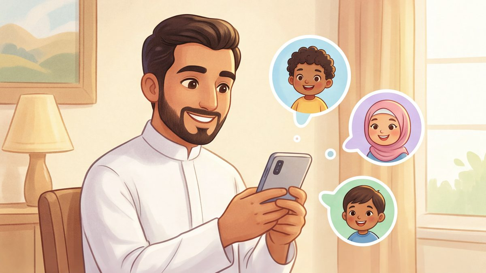
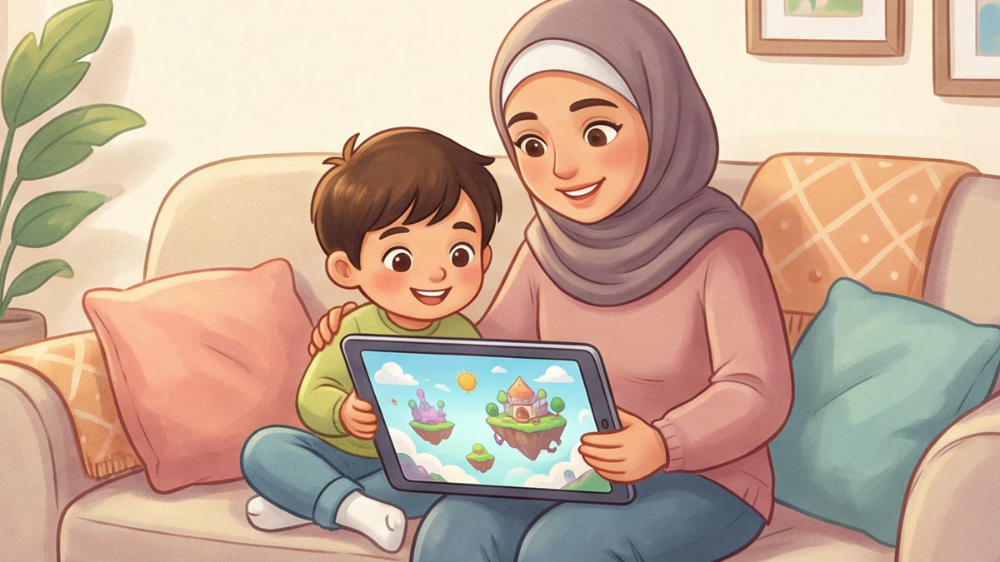
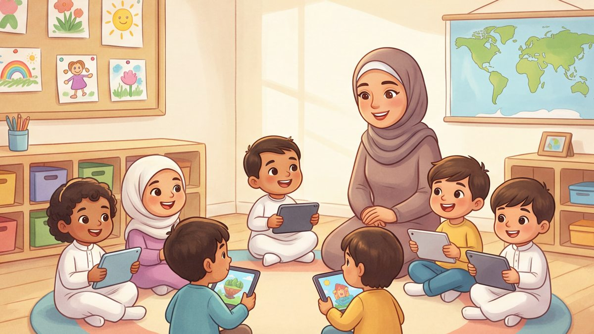

عالم ملوّن يتعلّم فيه طفلك ويلعب
قصص وفيديوهات، حروف وأرقام، قرآن وألعاب وقيم، في جزر يتنقّل بينها طفلك مع نور. وأنت تتابع تقدّمه وتحدّد وقته اليومي من حسابك.
- من غير كلمة مرور للطفل
- تحدّد وقته اليومي والمزايا المتاحة له
- ما يرسله للنشر نراجعه أولاً


تسع جزر، وفي كل جزيرة عالم
يتنقّل طفلك بين الجزر على خريطة واحدة، ولأغلب الجزر رفيق يرحّب به. اسحب أو اضغط على جزيرة لترى ما فيها.
يتقدّم خطوة بخطوة، ويفرح بكل إنجاز
يكسب طفلك النقاط عندما يُنهي شيئاً، لا عندما يفتح صفحة، فيرى ثمرة ما أنجزه.

النقاط والمستويات
نقاط عند إنهاء قصة أو حرف أو سورة أو لعبة، ومستوى بعد مستوى.


الشارات
شارات يجمعها كلما أنجز.

الأيام المتتالية
يرى كم يوماً متتالياً زار فيه عالمه.

المتصدرون
لوحة متصدرين واحدة حسب مجموع النقاط.

إبداعاتي
رسوماته وتلويناته وقصصه في مكان واحد.
ثلاث خطوات، ويبدأ طفلك رحلته
أنت من يُنشئ الحساب ويضيف الأطفال، ولا يحتاج طفلك اسم مستخدم ولا كلمة مرور.
 ١
١أنشئ حسابك
حساب ولي أمر لأسرتك، أو حساب مؤسسة لمدرستك أو حضانتك، من غير اشتراط باقة مدفوعة عند التسجيل.

٢أضف أطفالك
لكل طفل ملف باسمه وتاريخ ميلاده، فيُرتَّب له المحتوى حسب عمره.

٣اختر ملف طفلك
تختار ملفه من حسابك، فيدخل عالمه ويبدأ من حيث توقف.

أنت تقرّر، وطفلك يستمتع بأمان
من لوحتك تتابع طفلك وتضبط ما يناسبه.
- وقت يومي لكل طفلوتمدّه دقائق عند الحاجة لليوم نفسه.
- تتحكم في المزاياتشغّل المتاح في باقتك أو توقفه، مثل ورشة السحر والمسابقات ورفع الصور.
- مراجعة قبل النشرما يرسله طفلك للنشر يراجعه فريق المنصة أولاً.
- ذكاء اصطناعي بخيارات جاهزةيختار طفلك الفكرة من خيارات معدّة، من غير كتابة حرة.
- نور مرشدة لا محادثةتقدّم إرشادات معدّة مسبقاً بالصوت والكلمة.
- تتابع تقدّمهما أكمله وأهم نشاطاته، من غير مقارنة بغيره.
عالم أجيال في صفّك
حساب مؤسسة واحد لكل أطفالك، ومنه تختار ملف الطفل فيدخل عالمه على أي جهاز في الصف.
- أضف الأطفال دفعة واحدة بملف Excel جاهز
- وقت يومي ومزايا لكل طفل
- تتابع تقدّم كل طفل من لوحة المؤسسة

عالم أجيال في تطبيق على الجوال والجهاز اللوحي
حمّل التطبيق، وادخل بحسابك، ثم اختر ملف طفلك. ويكمل من حيث توقف، سواء دخل من التطبيق أو من الموقع.
الحساب واحد: تُنشئه مرة، وتستخدمه على التطبيق والموقع.


باقات تناسب أسرتك أو مؤسستك
يمكنك إنشاء حسابك من غير اشتراط باقة مدفوعة، وتجد الباقات وأسعارها داخل حسابك.
عندك سؤال؟
هل يحتاج طفلي حساباً خاصاً به؟
لا. أنت تُنشئ الحساب وتضيف ملفات أطفالك، ثم تختار ملف طفلك فيدخل عالمه، من غير اسم مستخدم ولا كلمة مرور له.
لأي عمر تناسب المنصة؟
للأطفال من 3 إلى 15 سنة. يظهر لطفلك أولاً ما يناسب عمره، ولا يُخفى عنه باقي المحتوى بسبب عمره فقط.
هل أستطيع تحديد وقت طفلي؟
نعم. تضع حداً يومياً لكل طفل، ويمكنك أن تمدّه دقائق إضافية لليوم نفسه عند الحاجة.
من يرى رسومات طفلي وقصصه؟
تبقى أعماله في «إبداعاتي» خاصة، تراها أنت من حسابك ولا تظهر لغيركما. وإذا أرسل عملاً للنشر، يراجعه فريق المنصة قبل أن يظهر.
هل تتحدث نور مع طفلي بحرية؟
لا. نور مرشدة تقدّم إرشادات وجملاً معدّة مسبقاً بالصوت والكلمة، وليست محادثة مفتوحة.
هل يمكن استخدام المنصة في المدرسة أو الحضانة؟
نعم. للمدارس والحضانات حساب مؤسسة، ويمكنها إضافة الأطفال دفعة واحدة بملف Excel.
هل أستطيع التصفح قبل إنشاء حساب؟
نعم. يمكنك التصفح كزائر ومشاهدة المحتوى المتاح للزوار، من غير حفظ للنقاط أو التقدّم.